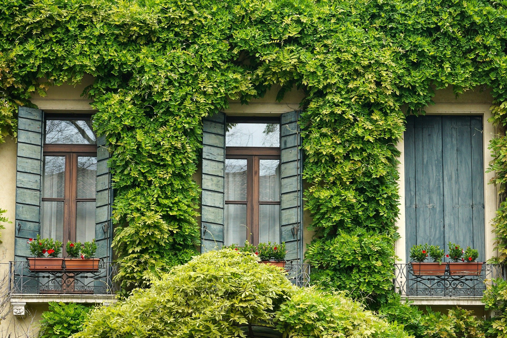
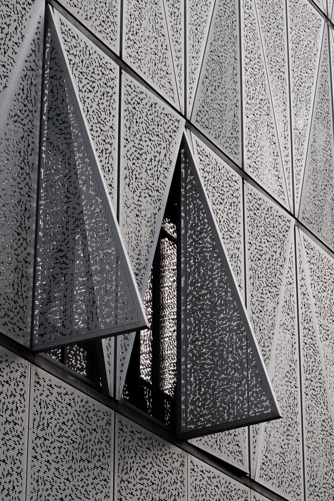

Architecture and nature
Nature is often disassociated with modern architected because nature must be destroyed to create architecture. This, however, is not always the case as seen in the image to the right. Nature will always reclaim and complement architecture if conditions are right. The presence of nature adds a complex layer of beauty that architects can not create because it is unpredictable and natural. Such beauty is rarely appreciated.

some random info

Architecture is also nature itself. All materials used to create complex structures are created from elements found on the Earth. This aspect of architecture is much clearer in older structures because materials were often handmade before technological advancements made construction easier. Thus, the pieces of the earth are easier to identify.

Older structures that have stood the test of time represent the brilliant ingenuity of humans from the past. Considering the numerous modifications architects incorporate to modernize them, the original design of such structures is still appreciated by the general public.

Modern and ancient architects often derive inspiration from art. This is a trend that will always be a part of the practice. Modern architects also derive inspiration from structures of the past. The structures of today will inspire the structures of tomorrow.
“As an architect, you design for the present, with an awareness of the past for a future which is essentially unknown.”
-Norman Foster